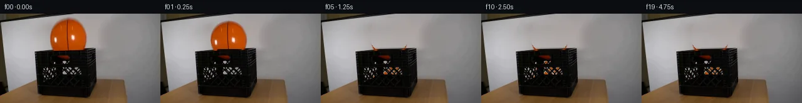

![首帧]()

Round 00
2026-11-04T20:29:41.191170+00:00像素候选变化代码 +226/−0inspection 更新
pixels 854f7838f8aa9c41 · code 81a4172d4a910ea2
查看本轮 generate.py 真实 diff
--- previous/generate.py +++ current/generate.py @@ -0,0 +1,226 @@ +#!/usr/bin/env python3 +"""Generate a fixed-camera, source-texture animation for the PixelWorld task.""" + +from pathlib import Path + +import cv2 +import numpy as np +from PIL import Image, ImageDraw, ImageFont + +import artifact_io + + +ROOT = Path(__file__).resolve().parent +H, W = 144, 256 + + +def soft_ellipse(shape, center, radii, feather=1.25): + """Antialiased ellipse coverage in [0, 1].""" + h, w = shape + yy, xx = np.mgrid[:h, :w] + cx, cy = center + rx, ry = radii + # Signed approximate distance in output pixels. + q = np.sqrt(((xx - cx) / rx) ** 2 + ((yy - cy) / ry) ** 2) + edge = (1.0 - q) * min(rx, ry) + return np.clip(edge / feather + 0.5, 0.0, 1.0).astype(np.float32) + + +def make_clean_plate(source): + """Remove only the original ball using local numeric inpainting.""" + # Cover the sphere and its antialiased boundary. The lower part overlaps the + # crate lip, whose rowwise dark structure is reconstructed from both sides. + mask = (soft_ellipse((H, W), (108.7, 35.0), (31.3, 29.7), 0.45) > 0).astype(np.uint8) * 255 + plate = cv2.inpaint(source, mask, 5.0, cv2.INPAINT_TELEA) + + # The wall is almost a rowwise neutral gradient. Blend a deterministic + # side-to-side estimate into the middle of the inpainted region above the + # crate, which suppresses radial inpaint streaks while retaining sensor grain. + rng = np.random.default_rng(1501) + for y in range(4, 57): + x0, x1 = 76, 142 + left = source[y, 68:76].astype(np.float32).mean(axis=0) + right = source[y, 142:150].astype(np.float32).mean(axis=0) + for x in range(x0, x1): + # Smooth horizontal illumination plus low-amplitude photographic grain. + u = (x - x0) / max(1, x1 - x0 - 1) + estimate = left * (1.0 - u) + right * u + noise = rng.normal(0.0, 1.35, 3) + a = mask[y, x] / 255.0 + plate[y, x] = np.clip((1 - a) * source[y, x] + a * (estimate + noise), 0, 255) + return plate.astype(np.uint8), mask + + +def extract_ball(source): + """Return a photographic ball sprite and its soft silhouette alpha.""" + # The source ball is already partly behind the crate lip. Keep its real + # texture and visible silhouette; the unobserved bottom cap remains behind + # the lip in every generated pose. + x0, y0, x1, y1 = 76, 5, 142, 63 + sprite = source[y0:y1, x0:x1].copy() + local_center = (108.7 - x0, 35.0 - y0) + alpha = soft_ellipse(sprite.shape[:2], local_center, (29.6, 28.1), 1.15) + + # The physical top lip hides the bottom of the sphere in frame zero. Fade + # the uncertain final source rows; they will always be behind the front rim. + yy = np.arange(sprite.shape[0], dtype=np.float32)[:, None] + lower_fade = np.clip((60.5 - (yy + y0)) / 1.8, 0.0, 1.0) + alpha *= lower_fade + return sprite, alpha, local_center + + +def transform_sprite(sprite, alpha, angle, scale_x, scale_y): + """Rotate and gently squash a sprite around its center on a padded canvas.""" + sh, sw = alpha.shape + pad = 18 + canvas = np.zeros((sh + 2 * pad, sw + 2 * pad, 3), np.uint8) + ac = np.zeros((sh + 2 * pad, sw + 2 * pad), np.float32) + canvas[pad:pad + sh, pad:pad + sw] = sprite + ac[pad:pad + sh, pad:pad + sw] = alpha + center = (canvas.shape[1] / 2.0, canvas.shape[0] / 2.0) + matrix = cv2.getRotationMatrix2D(center, angle, 1.0) + rgb = cv2.warpAffine(canvas, matrix, (canvas.shape[1], canvas.shape[0]), + flags=cv2.INTER_CUBIC, borderMode=cv2.BORDER_CONSTANT) + aa = cv2.warpAffine(ac, matrix, (canvas.shape[1], canvas.shape[0]), + flags=cv2.INTER_CUBIC, borderMode=cv2.BORDER_CONSTANT) + aa = np.clip(aa, 0.0, 1.0) + if scale_x != 1.0 or scale_y != 1.0: … diff truncated; 139 more lines …